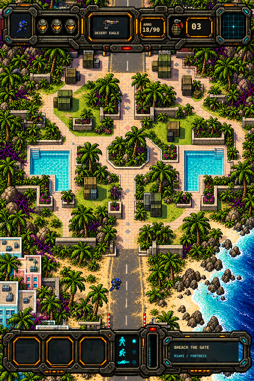
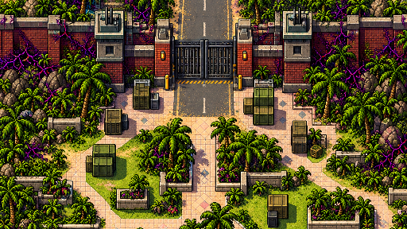
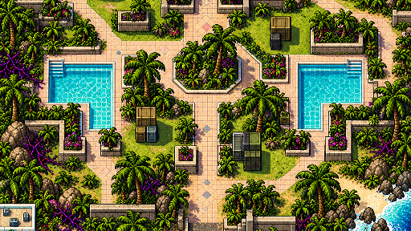

Miami infiltration
Enter from the coastal beach, move through the palms and pool courtyards, then break through the brick fortress gate to the next stage.
The stage is a continuous art concept. Cover height, collision, patrols, visibility, and the gate objective will be authored later.


Fortress approach

Palm park and pools

Pilot action review
New actions contain three candidate frames each. Existing aim and run poses can be reviewed with muzzle effects. Center markers show provisional crop pivots.
Palette filtering is illustrative. Final armor masks must exclude action glows. New north/south actions, weapon grip variants, root anchors, and hand sockets still need art cleanup.
View original body sheets
Effects and awareness
Green / amber / red cone scans represent calm, suspicious, and alert. The engine must clip vision against walls and stacked cover.
Beam pulses, napalm, impacts, muzzle flashes, and blasts are candidate visual sequences. Playback does not simulate damage or detection.
Objects, weapons, and alien units
Systems notes and source files
Normal on-foot mode keeps one-hit kills and lives. Finite gun ammo, grenade throws, wall-tap noises, prone movement, two roll exits, crate drops, enemy perception, and ground/air targeting are recorded for later engine work.
278 extracted PNGs · 57 candidate sequences · eleven original image masters. One joined heavy death/powerup fringe is flagged in export checks.